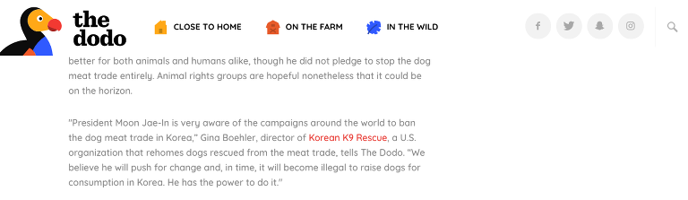
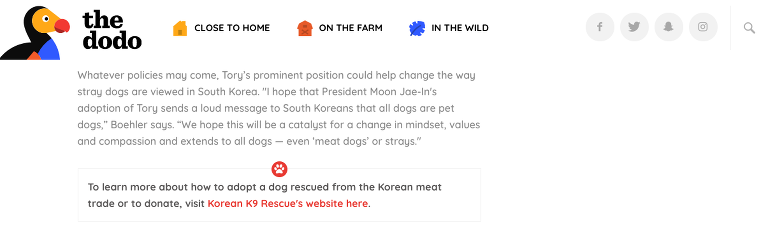

Korean K9 Rescue has exciting news! We have been featured on the popular animal news website thedodo.com! The article highlights how South Korean president Moon Jae-In has adopted a rescue from the cruel meat trade. The newly-elected leader adopted a 4- year old mixed breed named Tory. This represents a huge step forward for shelter dogs due to superstitions and negative connotations associated with dark coated mixed dogs. Tory will be the very first homeless mixed breed to serve as South Korea’s “first dog”.
Korean K9 Rescue’s activism in preventing the dog meat trade has gained recognition and our Director, Gina Boehler was given the opportunity to say a few words about the subject — “President Moon Jae-In is very aware of the campaigns around the world to ban the dog meat trade in Korea. We believe he will push for change and, in time, it will become illegal to raise dogs for consumption in Korea. He has the power to do it.”

Gina is then quoted again in the article for a closing statement — “I hope that President Moon Jae-In’s adoption of Tory sends a loud message to South Koreans that all dogs are pet dogs,” Boehler says. “We hope this will be a catalyst for a change in mindset, values and compassion and extends to all dogs — even ‘meat dogs’ or strays.”

We are so happy about the recent news and cheers to President Moon Jae-In for his progressive action on animal rights in South Korea. Also congrats to us on our feature. Thank you thedodo.com!
Read the full article here